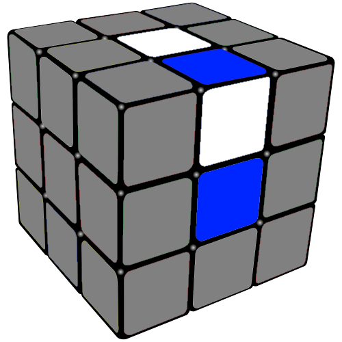

| Home | Guide | Stage 1 | Stage 2 | Stage 3 | Stage 4 | Stage 5 | Stage 6 | Credits |
Stage 1your goal is to set the white edge pieces correctlya few tips1. first find a corner and place it like so; note that it dosent't have to be blue!2. did you note that BOTH SIDES OF THE EDGE PIECE ARE THE SAME AS THE CENTER PIECE this is CRITACAL FOR SOLVEING THE RUBIK'S CUBE!3. do the following4. repeat till you have reached your goal |
||||||||